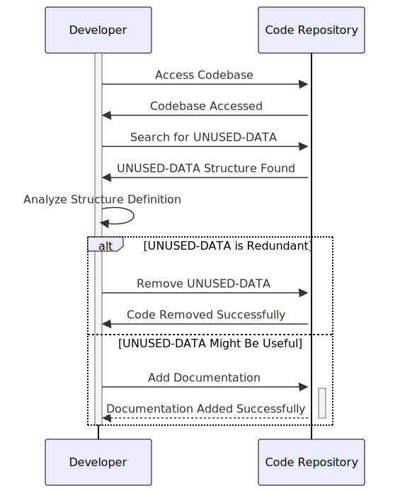

Gerado em: 1º de outubro de 2024
Título do Documento: Especificação da Estrutura UNUSED-DATA
Descrição Resumida:
Este documento descreve uma estrutura de dados chamada UNUSED-DATA encontrada no código-fonte do aplicativo CardDemo. A estrutura parece ser um remanescente de uma versão anterior e não está sendo utilizada ativamente no sistema atual.
Histórias do Usuário:
Como Desenvolvedor do Aplicativo, preciso entender o propósito e a relevância de todas as estruturas de dados no código-fonte, incluindo aquelas marcadas como não utilizadas, para manter a clareza do código e potencialmente reutilizar as estruturas existentes.
Épico Relacionado: 9 - Utilitários do Sistema
Requisitos Funcionais:
Nenhum. A estrutura UNUSED-DATA não está sendo utilizada atualmente e não possui funcionalidades associadas.
Requisitos Não Funcionais:
N/A
Critérios de Aceite:
N/A
Melhorias de Código:
- Investigar o Propósito: Realize uma revisão completa do código-fonte e histórico de versões para determinar o propósito original da estrutura
UNUSED-DATA.
- Considerar a Remoção: Se for confirmado que a estrutura não está sendo utilizada e não há planos de uso futuro, remova-a do código-fonte para reduzir a desordem e melhorar a manutenção.
- Documentar a Justificativa: Se a estrutura for mantida para fins históricos ou potencial uso futuro, adicione comentários claros e detalhados explicando seu histórico, o motivo do status “não utilizado” e quaisquer planos futuros potenciais para sua utilização.
Melhorias de Segurança:
N/A
Diagrama Conceitual:

–Made by “Smart Engineering” (by Compass.UOL)–